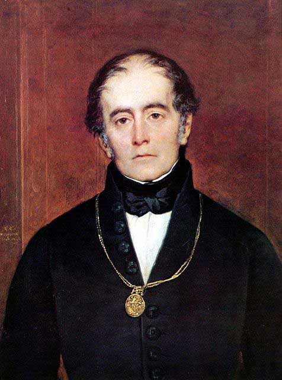

Andrés Bello
Andrés de Jesús María y José Bello López (Caracas, 29 de noviembre de 1781-Santiago, 15 de octubre de 1865) fue un polímata venezolano, quien fue a la vez filósofo, poeta, traductor, filólogo, ensayista, educador, político y diplomático. Considerado como uno de los humanistas más importantes de América, realizó contribuciones en innumerables campos del conocimiento.En Caracas,participó en el proceso que llevó a la independencia venezolana. En Chile, deempeñó cargos de senador y profesor, además de dirigir diversos periódicos locales. Como jurista, fue el principal impulsor y redactor del Código Civil, una de las obras jurídicas americanas más novedosas e influyentes de su época.
